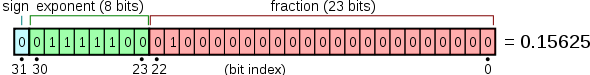

C++ Variable Types
Variables are actually just names for the storage areas that a program can operate on.
In C++, there are various variable types that can be used to store different kinds of data.
In C++, each variable has a specified type. The type determines the size and layout of the variable's storage, the range of values that can be stored in memory, and the operators that can be applied to the variable.
Variable names can consist of letters, digits, and the underscore character. They must begin with a letter or an underscore.
Uppercase and lowercase letters are different because C++ is case-sensitive.
Based on the basic types explained in the previous chapter, there are the following basic variable types, which will be explained in the next chapter:
| Type | Description |
|---|---|
| bool | Boolean type, stores the value true or false, occupying 1 byte. |
| char | Character type, used to store ASCII characters, usually occupying 1 byte. |
| int | Integer type, usually used to store ordinary integers, typically occupying 4 bytes. |
| float | Single-precision floating-point value, used to store single-precision floating-point numbers. Single-precision has the format: 1 sign bit, 8 exponent bits, 23 fraction bits, usually occupying 4 bytes.
 |
| double | Double-precision floating-point value, used to store double-precision floating-point numbers. Double-precision has 1 sign bit, 11 exponent bits, 52 fraction bits, usually occupying 8 bytes.
|
| void | Represents the absence of a type. |
| wchar_t | Wide character type, used to store a wider range of characters, usually occupying 2 or 4 bytes. |

C++ also allows defining variables of various other types, such asEnumerations, pointers, arrays, references, data structures, classesetc., which will be explained in later chapters.
Integer Types:
int: Used to represent integers, usually occupying 4 bytes.short: Used to represent short integers, usually occupying 2 bytes.long: Used to represent long integers, usually occupying 4 bytes.long long: Used to represent longer integers, usually occupying 8 bytes.
Floating-Point Types:
float: Used to represent single-precision floating-point numbers, usually occupying 4 bytes.double: Used to represent double-precision floating-point numbers, usually occupying 8 bytes.long double: Used to represent higher-precision floating-point numbers; the number of bytes occupied may vary depending on the implementation.
Character Types:
char: Used to represent characters, usually occupying 1 byte.wchar_t: Used to represent wide characters, usually occupying 2 or 4 bytes.char16_t: Used to represent 16-bit Unicode characters, occupying 2 bytes.char32_t: Used to represent 32-bit Unicode characters, occupying 4 bytes.
Boolean Type:
boolUsed to represent boolean values, can only taketrueorfalse。
Enumeration Types:
enum: Used to define a set of named integer constants.
Pointer Types:
type*Used to represent pointers to typetypepointer to the object.
Array Types:
type[]ortype[size]: Used to define an array composed of elements of the same type.
Structure Types:
struct: Used to define a structure containing multiple members of different types.
Class Types:
class: Used to define a custom type with attributes and methods.
Union Types:
union: Used to define a special data type that can store different data types at the same memory location.
In C++, the length of a type (i.e., the number of bytes it occupies) depends on the compiler and computer architecture. However, the C++ standard specifies the minimum ranges for different integer types, rather than specific byte counts, in order to ensure that code runs correctly on different systems.
Please note that the ranges of the above types are only the minimum requirements specified by the C++ standard. In practice, on many systems these types may occupy more bytes. For example, on many modern computers, int usually occupies 4 bytes, while long may occupy 8 bytes.
Next, we will explain how to define, declare, and use variables of various types.
Variable Definition in C++
A variable definition tells the compiler where and how to create storage for the variable.

A variable definition specifies a data type and contains a list of one or more variables of that type, as shown below:
type variable_list;
Here,typemust be a valid C++ data type, which can be char, wchar_t, int, float, double, bool, or any user-defined object,variable_listcan consist of one or more identifier names, with multiple identifiers separated by commas. Several valid declarations are listed below:
lineint i, j, k;declare and define variables i, j, and k, which instruct the compiler to create variables named i, j, k of type int.
Variables can be initialized (given an initial value) at the time of declaration. An initializer consists of an equals sign followed by a constant expression, as shown below:
Here are a few examples:
Definitions without initialization: variables with static storage duration are implicitly initialized to NULL (all byte values are 0), while the initial values of all other variables are undefined.
Variable Declaration in C++
A variable declaration assures the compiler that the variable exists with the given type and name, so that the compiler can continue compilation without needing the complete details of the variable. A variable declaration is only meaningful at compile time; at program link time, the compiler needs the actual variable definition.
When you use multiple files and define a variable in only one of them (the file defining the variable is available at program link time), variable declarations become very useful. You can use theexternkeyword to declare a variable anywhere. Although you can declare a variable multiple times in a C++ program, a variable can be defined only once in a file, function, or code block.
Example
Try the following example, where the variables are declared at the top, but they are defined and initialized inside the main function:
Example
When the above code is compiled and executed, it produces the following result:
30 23.3333
Similarly, when declaring a function, you provide a function name, while the actual definition of the function can be placed anywhere. For example:
Lvalues and Rvalues in C++
There are two types of expressions in C++:
- lvalue:An expression that refers to a memory location is called an lvalue expression. An lvalue can appear on the left or right side of the assignment operator.
- rvalue:The term rvalue refers to a value stored at some address in memory. An rvalue is an expression that cannot be assigned to; that is, an rvalue can appear on the right side of the assignment operator, but cannot appear on the left side.
Variables are lvalues, so they can appear on the left side of the assignment operator. Numeric literals are rvalues, so they cannot be assigned to and cannot appear on the left side of the assignment operator. The following is a valid statement:
int g = 20;
But the following is not a valid statement and will generate a compile-time error:
10 = 20;other extensions